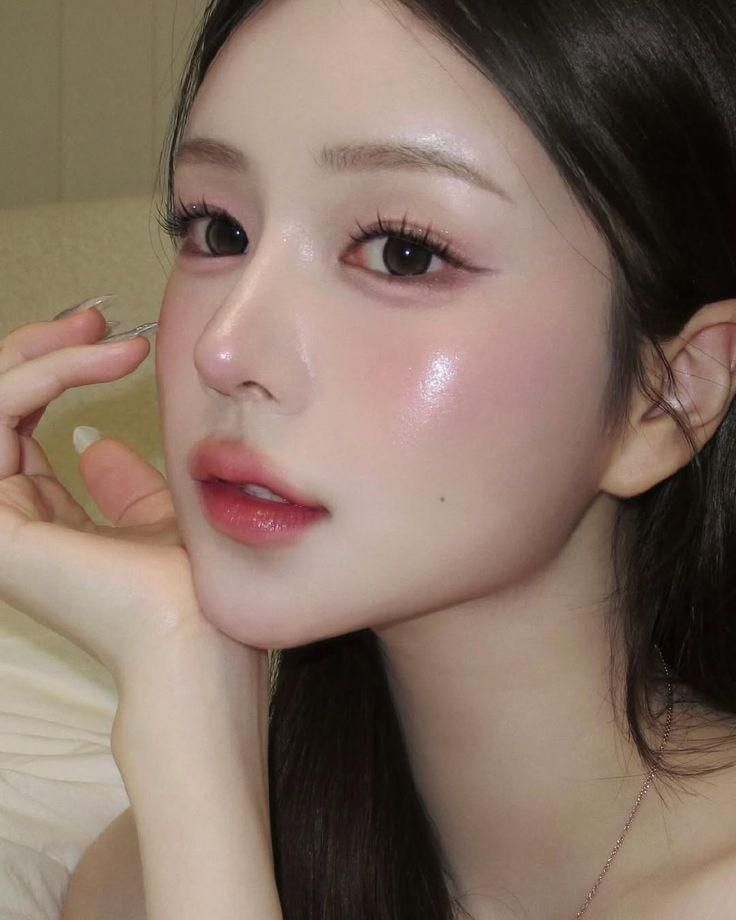
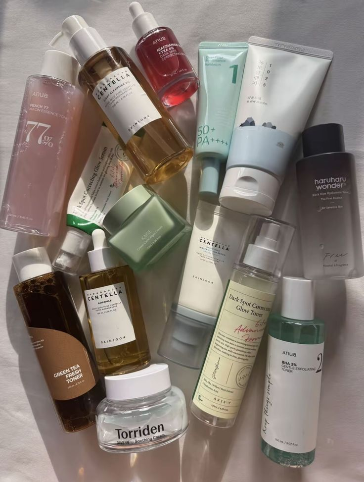
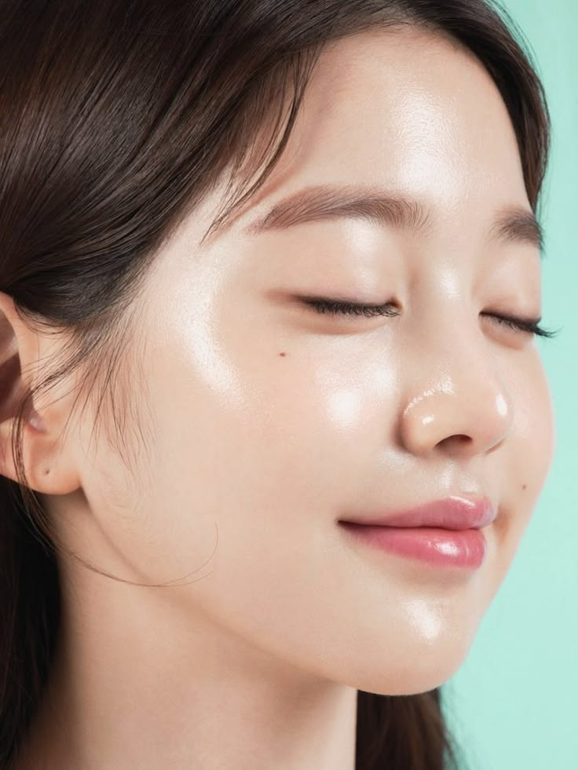

Фотографии ниже показывают примеры корейского макияжа и ухода за кожей. K-Beauty стиль обычно выглядит естественно и аккуратно. Часто используются нежные оттенки, сияющая кожа и лёгкий макияж глаз.
Корейская косметика вдохновляет многих людей по всему миру, а фотографии макияжа часто становятся популярными в социальных сетях.
Галерея


